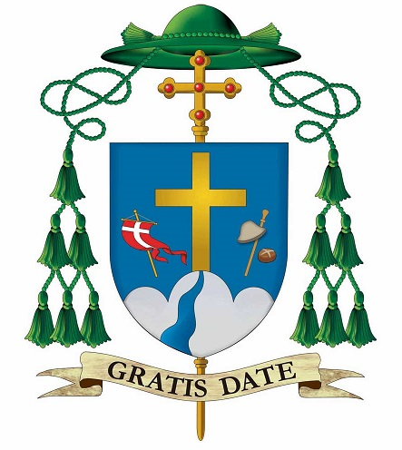

La diocesi di Treviso è una sede della Chiesa cattolica in Italia suffraganea del patriarcato di
Venezia
appartenente alla regione ecclesiastica Triveneto.
Nel 2020 contava 778.500 battezzati su 886.000 abitanti ed attualmente è retta dal vescovo Michele
Tomasi.

IL TERRITORIO
La diocesi è delimitata a nordovest dalle Prealpi Bellunesi e a est dal Piave (alcune parrocchie si
trovano sulla riva sinistra a causa del mutevole corso del fiume); a ovest e a sud non segue dei confini
naturali: essi si muovono da Paderno a Mussolente, scendendo poi verso Tombolo e piegando per
Camposampiero e il Miranese.
Il confine continua verso est escludendo i comuni di Venezia e Quarto d'Altino.
Sostanzialmente al centro di questo territorio sorge la città di Treviso, sede vescovile, in cui si
trova la cattedrale di San Pietro.
La diocesi riguarda quindi solo una parte della provincia di Treviso (la porzione sud-occidentale) e
comprende altresì ampie porzioni della città metropolitana di Venezia e della provincia di Padova, cui
si aggiunge il comune di Mussolente, in provincia di Vicenza.
Il territorio è suddiviso in 265 parrocchie, raggruppate in 14 vicariati.
I VICARIATI
Le parrocchie sono raggruppate nei seguenti vicariati:
-Vicariato urbano (con sede a Treviso, presso la cattedrale)
-Vicariato di Asolo (con sede ad Asolo)
-Vicariato di Camposampiero (con sede a Camposampiero)
-Vicariato di Castelfranco (con sede a Castelfranco Veneto)
-Vicariato di Castello di Godego (con sede a Castello di Godego)
-Vicariato di Mirano (con sede a Mirano)
-Vicariato di Mogliano (con sede a Mogliano Veneto)
-Vicariato di Monastier (con sede a Monastier di Treviso)
-Vicariato di Montebelluna (con sede a Montebelluna)
-Vicariato di Nervesa (con sede a Nervesa della Battaglia)
-Vicariato di Noale (con sede a Noale)
-Vicariato di Paese (con sede a Paese)
-Vicariato di San Donà di Piave (con sede a San Donà di Piave)
-Vicariato di Spresiano (con sede a Spresiano)
LA STORIA
Un’antica tradizione fa risalire già al primo secolo l’evangelizzazione delle terre venete per opera di
Prosdocimo, discepolo di san Pietro e primo vescovo di Padova, che avrebbe costituito ed organizzato le
chiese locali.
Probabilmente la prima presenza cristiana a Treviso risale al secolo IV, anche se la città non è ancora tale
da divenire sede episcopale.
Il tramonto di questo centro, devastato dalle invasioni barbariche, come pure quello della vicina sede
episcopale di Oderzo, determinarono lo sviluppo di Treviso.
Qui, provenienti da Altino, vennero trasferite le reliquie di san Liberale, discepolo laico di Eliodoro e
confessore della fede autentica contro gli ariani, che divenne poi patrono della città e della diocesi
trevigiana.
Il gesto permise a Felice di veder risparmiata, a differenza di altre, la propria chiesa dalla devastazione
ed anzi di vederne aumentare il territorio, inglobando parte delle diocesi di Altino e di Oderzo.
L’epoca medievale si caratterizzò per la diffusione e la strutturazione territoriale a partire dai primi
quattro arcipresbiterati, nei quali la diocesi era suddivisa in periodo carolingio, dai quali dipendevano
pievi e cappelle.
Il territorio diocesano si estese ulteriormente nel 969 quando l’imperatore Ottone I fece dono della diocesi
di Asolo a Rozo, vescovo di Treviso.
Nel X secolo sorsero in diocesi nuovi monasteri benedettini, tra cui quelli di S. Maria Assunta a Mogliano e
S. Maria del Piero a Monastier.
A rivitalizzare la vita cristiana, prima della città e poi della diocesi, giunsero dall’inizio del Duecento
gli ordini mendicanti: i francescani prima, i domenicani e gli agostiniani a pochi anni di distanza, cui
seguirono, nell’arco di un secolo, i secondi ordini femminili di clausura.
Dal 1389 al 1797 il territorio diocesano fu ininterrottamente sotto il dominio della Serenissima.
La partecipazione al Concilio di Trento del vescovo Giorgio Corner, in relazione con san Carlo Borromeo,
inaugurò per la diocesi una nuova stagione pastorale, contrassegnata dalla fondazione del seminario
diocesano, dalla convocazione di numerosi sinodi, da frequenti visite pastorali effettuate dai vescovi che
si avvicendarono.
Furono tutti di origine veneziana sino alla fine del Settecento, e tra loro emerge la figura di Augusto
Zacco, che nel 1727 indisse un importante sinodo.
La Chiesa di Treviso tra Sei e Settecento stava lentamente assimilando le scelte tridentine.
Le novità pastorali introdotte dal concilio coesistevano con il lassismo morale e l’ignoranza religiosa.
Il Seminario, sorto tra i primi in Italia all’indomani del Concilio di Trento, accolse alla fine del 1566 i
primi diciassette alunni.
Subì numerosi trasferimenti di sede all’interno delle mura cittadine e molteplici interventi di
ristrutturazione, dalla primitiva residenza alle Canoniche nuove fino all’attuale, situata dal 1841 presso
l’ex convento domenicano di san Nicolò.
Alcuni tra i maestri provenivano dal clero diocesano, altri dagli ordini religiosi presenti in città.
L’episcopato del veneziano Bernardino Marin coincise con l’ultimo periodo della Serenissima.
Ebbe appena il tempo di terminare la visita pastorale prima che, dal 1797 al 1813, il territorio cambiasse
per ben sette volte il governo politico, tra municipalisti, francesi e austriaci. Il clero diocesano in
questo periodo passò da quasi 900 componenti a 650, compresi gli ex religiosi incardinatisi dopo le
soppressioni.
Se la stabilità politica creò le condizioni per un rinnovamento pastorale, come lo sviluppo delle parrocchie
e l’inserimento in diocesi di nuovi ordini religiosi, soprattutto femminili, il controllo pressante, pedante
e pesante dell’amministrazione austriaca su ogni atto ecclesiastico provocava nel clero, e persino nel
vescovo, fastidio e irritazione.
Si ritiene che un terzo del clero, tra cui molti parroci e cappellani, vicini ai sentimenti della
popolazione, sia stato coinvolto negli eventi rivoluzionari del 1848.
In città alunni e professori del seminario furono implicati, e altri fecero parte del governo provvisorio
rivoluzionario. Successivamente non fu facile ricondurre il clero trevigiano ad un atteggiamento
legittimista.
Nella seconda metà dell’Ottocento la diocesi fu guidata da pastori eminenti: il vicentino beato Giovanni
Antonio Farina (1850-1860), apostolo della carità e fondatore delle Suore Maestre di S. Dorotea Figlie dei
Sacri Cuori, successivamente trasferito a Vicenza a causa di un grave dissidio con il Capitolo, e
beatificato nel 2001, e il veneziano Federico Maria Zinelli (1861-1879), teologo illustre che al Concilio
Vaticano I fu uno dei relatori in aula della Costituzione “Pastor Aeternus”
A Pio X si deve la scelta nel 1904 per la guida della sua diocesi di origine; si tratta del giovane
provinciale dei cappuccini veneti, Andrea Giacinto Longhin, beatificato da Giovanni Paolo II il 20 ottobre
2002.
La sua azione pastorale favorì il sorgere di figure significative tra i preti, i religiosi e i laici.
Durante la seconda guerra mondiale, dopo l’occupazione tedesca, il vescovo Mantiero fu un autentico defensor
civitatis.
Il periodo postbellico si caratterizzò per il contributo sostanziale dato alla ricostruzione morale,
culturale e materiale, profuso a tutto campo nell’impegno sociale e politico dei cattolici, lo fecero nel
partito e nel sindacato di ispirazione cristiana, nelle Acli e nella Coldiretti, delle quali il primo
assistente e consulente ecclesiastico nazionale nel dopoguerra fu Pietro Pavan, poi cardinale.
Notevole in questi decenni è pure l’impegno missionario della diocesi.
Sono certamente oltre il migliaio i religiosi, le religiose, i laici e, a partire dall’enciclica di Pio XII
«Fidei Donum», i sacerdoti diocesani, che nel sec. XX sono partiti per la missione; sei di essi vi hanno
trovato il martirio.
Gli anni dell’episcopato del vicentino mons. Antonio Mistrorigo (1958-1988) accompagnano la preparazione, la
celebrazione, l’applicazione e la recezione del Concilio Vaticano II.
Il post-concilio rivela, con i fermenti di rinnovamento, una ricca vitalità pastorale.
Le settimane di aggiornamento pastorale, gli annuali convegni ecclesiali, gli organismi di partecipazione
divengono manifestazioni della comunione ecclesiale ed insieme luoghi di programmazione e di verifica, a
partire dai piani pastorali decennali della Conferenza Episcopale Italiana.
Il Sinodo del 1983-1987 «Una Chiesa che cammina insieme» costituisce l’espressione più significativa del
periodo post-conciliare.
Gli anni successivi vedono la diocesi trevigiana impegnata ad assimilare gli orientamenti sinodali per
rinnovare la propria vita spirituale in vista di un annuncio e una testimonianza significativa per l’uomo
d’oggi.